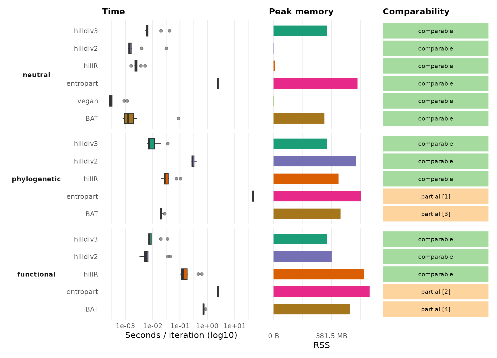
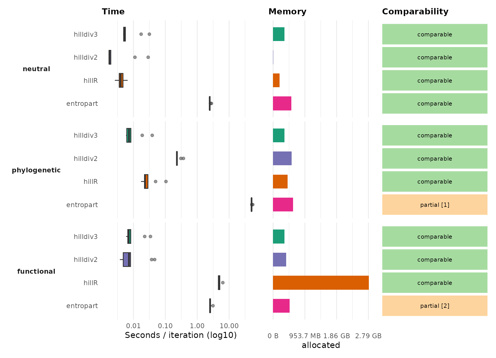
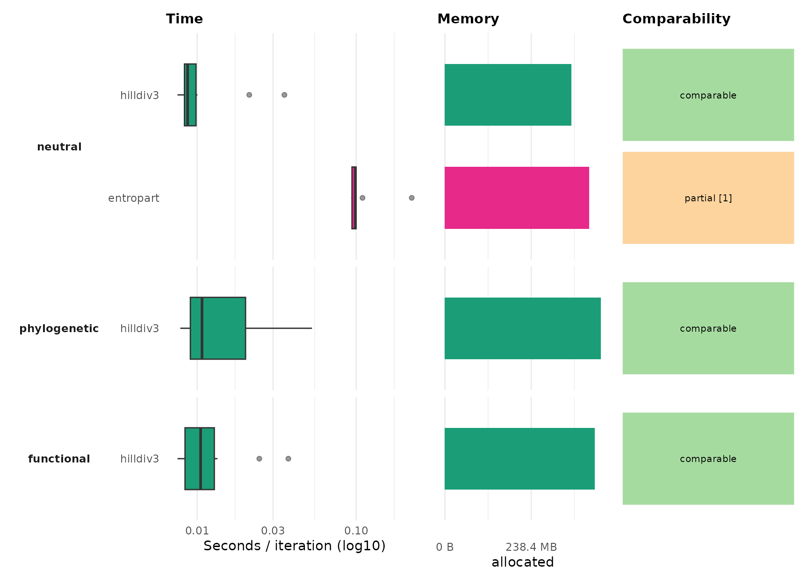
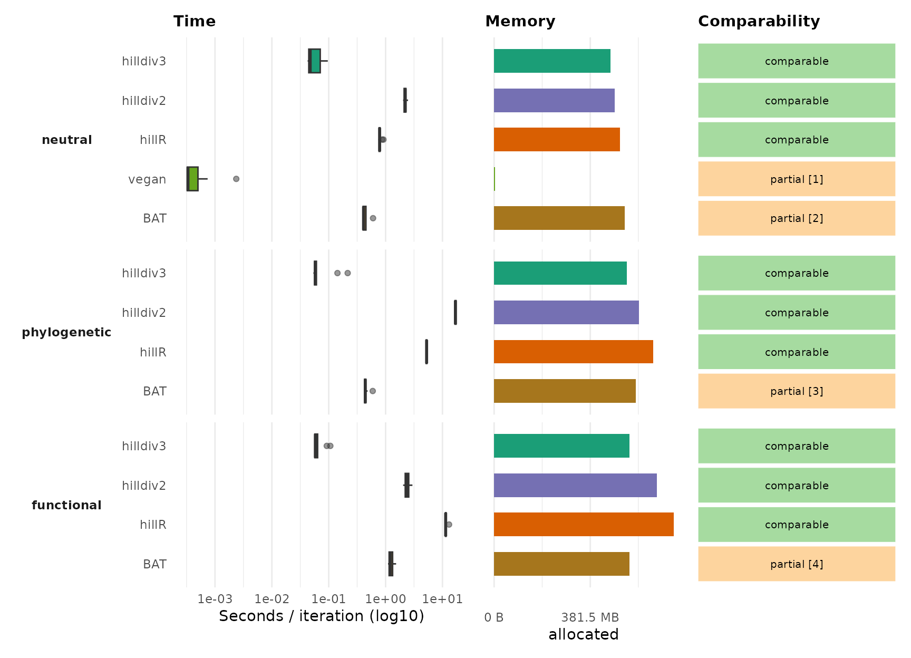

The benchmark suite compares hilldiv3 with the legacy
hilldiv2 code and the external packages hillR,
entropart, vegan and BAT.
Benchmark results
| n_taxa | n_samples | iterations | backend |
|---|---|---|---|
| 200 | 50 | 10 | bench |
Each benchmark is shown with three panels: time per iteration (left, boxplots over the benchmark iterations), peak memory (centre, resident set size of the forked worker) and comparability (right). Within every benchmark the facets are ordered neutral (top), phylogenetic (middle) and functional (bottom), and the packages are named on the y axis. Numbers in the comparability column are footnotes, explained below each figure.
B1: Alpha diversity

[1] Phylogenetic alpha requires an ultrametric tree and returns
entropart’s normalized phylodiversity.
[2] Similarity-based alpha uses Z, not hilldiv3’s distance-threshold
functional definition.
[3] BAT::alpha() computes Faith-style PD richness, not q = 0, 1, 2
phylogenetic Hill numbers.
[4] BAT::alpha() computes tree-based functional richness, not q = 0, 1,
2 functional Hill numbers.
B2: Diversity partitioning without hierarchy

[1] Phylogenetic partitioning requires an ultrametric tree and uses
entropart’s normalization.
[2] Similarity-based partitioning uses Z, not hilldiv3’s
distance-threshold functional definition.
B3: Nested diversity partitioning

[1] MergeMC supports hierarchical metacommunities, but not the same formula API/output.
B4: Pairwise beta diversity matrix

[1] Pairwise Bray-Curtis distance; related, but not Hill-number
dissimilarity.
[2] Pairwise Jaccard/Sorensen beta components, not Hill-number
dissimilarity.
[3] Pairwise PD beta components, not Hill-number dissimilarity.
[4] Pairwise FD beta components, not Hill-number dissimilarity.
What each tool can do
hilldiv3 is the reference implementation. The
contingency table below shows, for every benchmark, whether each package
offers a directly comparable operation (Yes), a related
but not identical operation (Partial), or no equivalent
(No). n/a means the package was not
installed when the benchmark ran. The caveats behind each
Partial are listed as footnotes under the corresponding figure
above.
| Benchmark | Operation | hilldiv3 | hilldiv2 | hillR | entropart | vegan | BAT |
|---|---|---|---|---|---|---|---|
| B1.1 (neutral) | Alpha diversity at q = 0, 1, 2 | Yes | Yes | Yes | Yes | Yes | Yes |
| B1.2 (phylogenetic) | Alpha diversity at q = 0, 1, 2 | Yes | Yes | Yes | Partial | No | Partial |
| B1.3 (functional) | Alpha diversity at q = 0, 1, 2 | Yes | Yes | Yes | Partial | No | Partial |
| B2.1 (neutral) | Diversity partitioning at q = 0, 1, 2 | Yes | Yes | Yes | Yes | No | No |
| B2.2 (phylogenetic) | Diversity partitioning at q = 0, 1, 2 | Yes | Yes | Yes | Partial | No | No |
| B2.3 (functional) | Diversity partitioning at q = 0, 1, 2 | Yes | Yes | Yes | Partial | No | No |
| B3.1 (neutral) | Nested diversity partitioning at q = 0, 1, 2 | Yes | No | No | Partial | No | No |
| B3.2 (phylogenetic) | Nested diversity partitioning at q = 0, 1, 2 | Yes | No | No | No | No | No |
| B3.3 (functional) | Nested diversity partitioning at q = 0, 1, 2 | Yes | No | No | No | No | No |
| B4.1 (neutral) | Pairwise beta diversity matrix at q = 1 | Yes | Yes | Yes | No | Partial | Partial |
| B4.2 (phylogenetic) | Pairwise beta diversity matrix at q = 1 | Yes | Yes | Yes | No | No | Partial |
| B4.3 (functional) | Pairwise beta diversity matrix at q = 1 | Yes | Yes | Yes | No | No | Partial |
Full results
Peak memory is the maximum resident set size (RSS) of the forked worker process during the run, so it includes the base R session and loaded packages, not only the operation’s own allocations. The complete per-operation and per-iteration tables are written next to the benchmark script:
-
performance-summary.csv— aggregated median time, peak memory, result size and speed relative tohilldiv3for each package-operation. -
performance.csv— per-iteration timings used for the boxplots. -
session-info.txt— R version, platform and package versions.
Reproducing the benchmark
Install the comparison packages, then run the benchmark script from the package root:
install.packages(c("bench", "hillR", "entropart", "vegan", "BAT"))
remotes::install_github("anttonalberdi/hilldiv2")
Sys.setenv(
BENCH_ITERATIONS = 10,
BENCH_N_TAXA = 200,
BENCH_N_SAMPLES = 50
)
source("inst/benchmarks/run-benchmarks.R")The script writes:
| File | Contents |
|---|---|
inst/benchmarks/results/performance.csv |
Per-iteration support, timing and memory table. |
inst/benchmarks/results/performance-summary.csv |
Aggregated timing and memory summary table. |
inst/benchmarks/results/performance-times.csv |
Compatibility copy of the per-iteration table for boxplots. |
inst/benchmarks/results/session-info.txt |
R version, platform and package versions. |
Adjust BENCH_ITERATIONS, BENCH_N_TAXA or
BENCH_N_SAMPLES to scale the run. Each call runs in a
forked worker capped at BENCH_MEMORY_LIMIT_GB (default 10);
a call that exceeds it is stopped and reported as
out_of_memory. Keep session-info.txt with the
published results because benchmark times depend on hardware, BLAS, R
version and package versions.
Notes on equivalence
hillR is the closest external comparator for Hill-number
alpha diversity, partitioning and pairwise comparisons across taxonomic,
phylogenetic and functional diversity.
entropart supports metacommunity alpha, beta and gamma
diversity, including phylogenetic and similarity-based diversity, but
some outputs and assumptions differ from the hilldiv3
API.
vegan provides neutral Hill numbers through Renyi
diversity and many pairwise community dissimilarities, but it does not
implement the phylogenetic, functional or Hill-number S/C/U/V
dissimilarity operations used by hilldiv3.
BAT includes biodiversity assessment tools for
taxonomic, phylogenetic and functional diversity. Its Hill-number
function is a neutral alpha-diversity comparator; its beta-diversity
tools are related but not the same Hill-number partition/dissimilarity
operations.
Session info
R version 4.3.3 (2024-02-29)
Platform: aarch64-apple-darwin20 (64-bit)
Running under: macOS 15.6.1
Matrix products: default
BLAS: /Library/Frameworks/R.framework/Versions/4.3-arm64/Resources/lib/libRblas.0.dylib
LAPACK: /Library/Frameworks/R.framework/Versions/4.3-arm64/Resources/lib/libRlapack.dylib; LAPACK version 3.11.0
locale:
[1] C
time zone: Europe/Copenhagen
tzcode source: internal
attached base packages:
[1] stats graphics grDevices utils datasets methods base
other attached packages:
[1] tibble_3.3.1 tidyr_1.3.2 dplyr_1.2.1
[4] hilldiv3_3.0.0.9000 testthat_3.3.2
loaded via a namespace (and not attached):
[1] RColorBrewer_1.1-3 subplex_1.9 magrittr_2.0.5
[4] farver_2.1.2 vctrs_0.7.3 RCurl_1.98-1.16
[7] terra_1.8-54 progress_1.2.3 DEoptim_2.2-8
[10] deSolve_1.40 pROC_1.19.0.1 caret_7.0-1
[13] parallelly_1.47.0 pracma_2.4.6 KernSmooth_2.23-26
[16] desc_1.4.3 plyr_1.8.9 hillR_0.5.2
[19] palmerpenguins_0.1.1 lubridate_1.9.5 hilldiv2_2.0.5
[22] igraph_2.1.1 lifecycle_1.0.5 iterators_1.0.14
[25] pkgconfig_2.0.3 Matrix_1.6-5 R6_2.6.1
[28] rbibutils_2.4.1 future_1.70.0 magic_1.6-1
[31] digest_0.6.39 numDeriv_2016.8-1.1 colorspace_2.1-2
[34] ps_1.9.3 rprojroot_2.1.1 pkgload_1.5.1
[37] vegan_2.6-8 pdist_1.2.1 clusterGeneration_1.3.8
[40] timechange_0.4.0 abind_1.4-8 mgcv_1.9-1
[43] compiler_4.3.3 proxy_0.4-29 withr_3.0.2
[46] bit64_4.8.0 doParallel_1.0.17 S7_0.2.1-1
[49] optimParallel_1.0-2 pkgbuild_1.4.8 R.utils_2.13.0
[52] maps_3.4.3 MASS_7.3-60.0.1 lava_1.9.0
[55] scatterplot3d_0.3-45 permute_0.9-10 ModelMetrics_1.2.2.2
[58] tools_4.3.3 otel_0.2.0 ape_5.8-1
[61] entropart_1.6-16 phytools_2.5-2 future.apply_1.20.2
[64] nnet_7.3-20 TreeTools_1.14.0 R.oo_1.27.1
[67] glue_1.8.1 quadprog_1.5-8 BAT_2.10.0
[70] nlme_3.1-166 R.cache_0.17.0 grid_4.3.3
[73] cluster_2.1.8.2 reshape2_1.4.5 PlotTools_0.3.1
[76] generics_0.1.4 recipes_1.3.2 gtable_0.3.6
[79] R.methodsS3_1.8.2 class_7.3-23 data.table_1.18.2.1
[82] hms_1.1.4 foreach_1.5.2 pillar_1.11.1
[85] stringr_1.6.0 splines_4.3.3 lattice_0.22-9
[88] survival_3.8-6 bit_4.6.0 ks_1.15.1
[91] tidyselect_1.2.1 stats4_4.3.3 expm_1.0-0
[94] hardhat_1.4.3 timeDate_4052.112 brio_1.1.5
[97] proto_1.0.0 stringi_1.8.7 geiger_2.0.11
[100] codetools_0.2-20 cli_3.6.6 nls2_0.3-4
[103] rpart_4.1.27 geometry_0.5.2 Rdpack_2.6.6
[106] Rcpp_1.1.1-1 globals_0.19.1 tidyverse_2.0.0
[109] coda_0.19-4.1 fastcluster_1.3.0 parallel_4.3.3
[112] gower_1.0.2 ggplot2_4.0.2 prettyunits_1.2.0
[115] mclust_6.1.1 bitops_1.0-9 listenv_0.10.1
[118] phangorn_2.12.1 mvtnorm_1.3-1 ipred_0.9-15
[121] e1071_1.7-17 scales_1.4.0 prodlim_2026.03.11
[124] purrr_1.2.2 crayon_1.5.3 combinat_0.0-8
[127] rlang_1.2.0 fastmatch_1.1-8 mnormt_2.1.1
[130] hypervolume_3.1.6